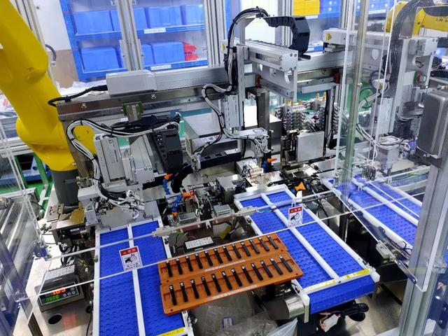

先从竞争说起，各行各业都有竞争，非标自动化行业的竞争不同于其他行业，是全方位立体的竞争。第一、人才竞争：由于非标自动化行业的企业都没有核心技术，只有核心技术人员，很多人可能不认同这个说法特别是企业老板，别不信邪，请尊重核心技术人员。一些不良企业的恶意挖人，无视行业工资水平，动不动就双倍薪水挖人，带来的恶果就是阿猫阿狗都享高薪，造成行业内技术人员不能安心钻研技术，都在考虑频繁跳槽提高身价。尤其一些业内的所谓猎头，不顾客户利益不考虑技术人员的自身前景，疯狂的拉皮条，在企业内挖进挖出，搞得人心惶惶。第二、项目竞争：这个是最主要的竞争，也是最白热化的竞争，在竞争中就是你死我活。商务、方案、报价缺一不可，商务手段我不了解，这个属于销售方面的技术，暂不讨论。方案其实就是讲故事，最早时期的非标自动化行业还没有这个讲故事的职位，随着业务量增多和项目越来越复杂，越来越多的非标自动化企业都配备了优秀的讲故事人员。讲故事不是忽悠客户，本身非标自动化设备制造就是把故事变成现实的过程，故事讲的好坏就是专业程度高低的体现，因此，技术好还不行还要学会讲故事。报价是讲故事的延续，也就是故事的价值体现，不提倡为了利润一味的提高报价，不能把客户当傻子，更不提倡为了订单无底限的压低报价，不能把竞争对手当傻子，也许你能一时的成功，但是这个行业谁先敢低于成本接项目谁就先死掉，非标自动化行业容不下无底限的厂商，大家好自为之。

再说说前景，随着科技的进步、生活的提高，各行各业对自动化的需求越来越多，似乎非标自动化行业前景不错。恰恰是因为“非标”这个词可能前景不是那么好，我说说你听听：非标自动化从汽车零部件行业发展而来，现在很多厂商的主营业务也都是来源于汽车零部件行业，随着我国汽车行业的大发展，大家都还不错，每天都有新的自动化公司诞生。但是随着汽车的饱和，最近似乎行业非常萧条，很多厂商都面临业务量不足的情况，其实这个是非标自动化行业的最大问题。非标就是要有客户需求，这不是谁能够计划到的，说的直白一点就是“吃了上顿没下顿”。不是我危言耸听，不管你现在手上有多少项目在做、有多少项目在谈，只有挖在篮里的才是菜。同时这个行业只注重发展自身素质还不够，必须有专业高素质的客户配合才行，否则项目的利润都会因为客户的不专业而逐渐流失。我们不能指望作为甲方的客户完全的配合我们工作，但是大家讨论问题至少要在一个频道上，而不是无理取闹，不多讲了，我也怕得罪客户。最近比较火的科创板来袭，大家注意了没有，上市的企业不少都来自自动化行业，但他们不算严格意义上的非标自动化，先不论从事的行业，他们都有一个共同的特点就是，所设计制造的设备可以复制，利润来源于量的增加，而不是技术上的突破。非标自动化行业每个项目都是一个挑战，越过高山越过大海，我们得到了什么，是客户的满意还是技术的提升，都有吧，但是意义何在，体量根本做不起来，没有券商看得上，更不会去包装，这也是非标自动化企业不需要上市的理由，根本没有机会上市。总结起来非标自动化的出路在于把非标自动化转化成标准的自动化，不要因为非标而忽视之前的开发，只有可以复制的技术和研发才能创造更多的价值和机会，不要过分迷恋非标开发，在一定基础之后无论技术人员还是老板都需要把之前的努力变现，而不是一辈子献身于非标自动化行业。